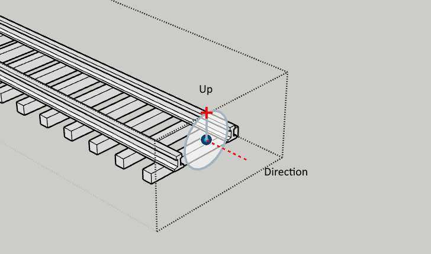

Class: Sketchup::Snap
- Inherits:
-
Drawingelement
- Object
- Entity
- Drawingelement
- Sketchup::Snap
Overview
A Snap is a custom grip used by SketchUp's Move tool. Snaps can be added at strategic places such as connectors to help assembling objects.

#direction is the direction a snap is “pointing”. This can be thought of as the normal direction of the snap. It can also be thought of as the direction you move an object when plugging it into another object, e.g. inserting a power coord.
#up controls the rotation around the Snap's axis.
When two objects are snapped together, the Snaps have opposite #direction vectors but matching #up vectors.
Instance Method Summary # collapse
-
#direction ⇒ Geom::Vector3d
The #direction method is used to get the direction this Snap is “pointing”.
-
#position ⇒ Geom::Point3d
The #position method is used to get the position of this Snap.
-
#set(*args) ⇒ Sketchup::Snap
The #set method is used to move and/or reorient a Snap.
-
#up ⇒ Geom::Vector3d
The #up method is used to get a vector representing the rotation of this Snap along its axis.
Methods inherited from Drawingelement
#bounds, #casts_shadows=, #casts_shadows?, #erase!, #hidden=, #hidden?, #layer, #layer=, #material, #material=, #receives_shadows=, #receives_shadows?, #visible=, #visible?
Methods inherited from Entity
#add_observer, #attribute_dictionaries, #attribute_dictionary, #delete_attribute, #deleted?, #entityID, #get_attribute, #inspect, #model, #parent, #persistent_id, #remove_observer, #set_attribute, #to_s, #typename, #valid?
Instance Method Details
↑ #direction ⇒ Geom::Vector3d
The #direction method is used to get the direction this Snap is “pointing”.
When two Snaps are snapped into each other, they have the opposite #direction.
↑ #position ⇒ Geom::Point3d
The #position method is used to get the position of this Snap.
↑ #set(position) ⇒ Sketchup::Snap #set(position, direction) ⇒ Sketchup::Snap #set(position, direction, up) ⇒ Sketchup::Snap
The #set method is used to move and/or reorient a Snap.